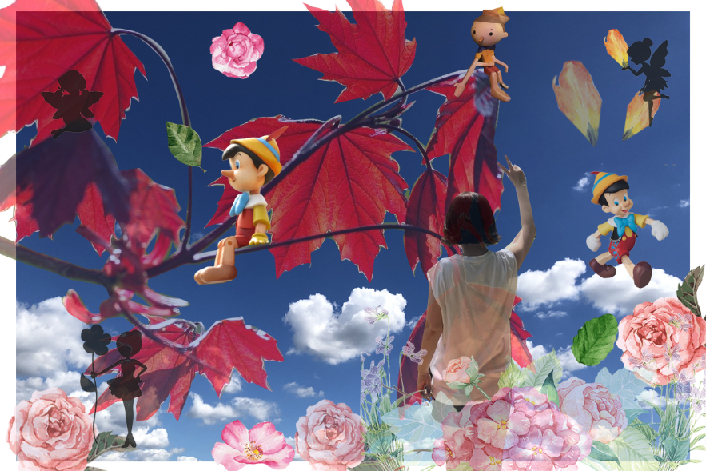
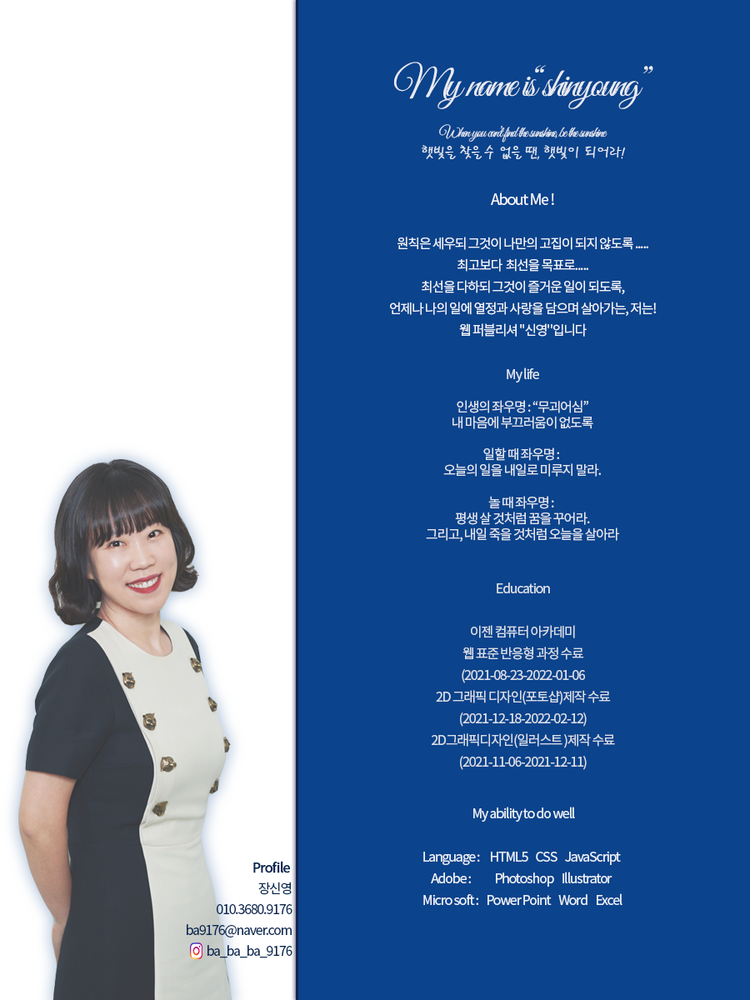
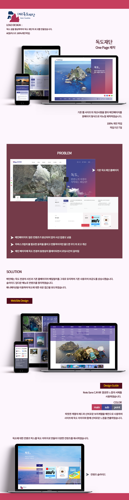
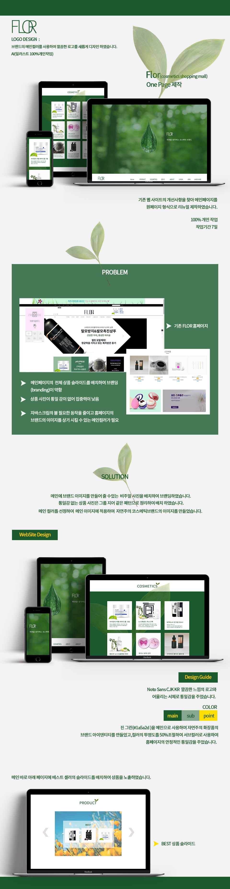
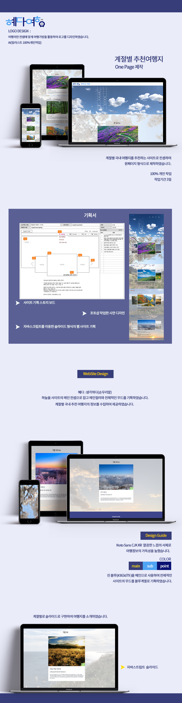
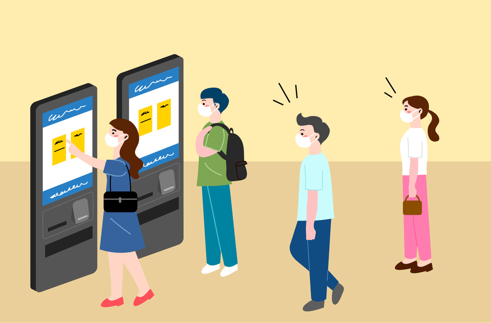
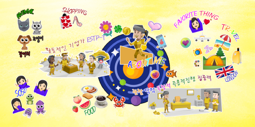
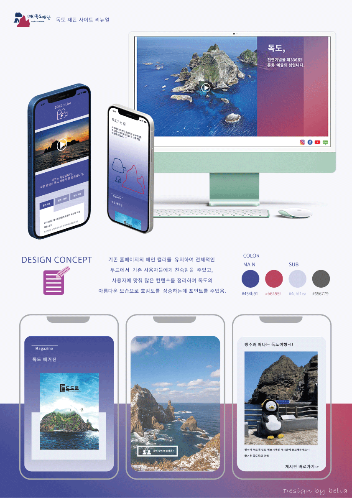
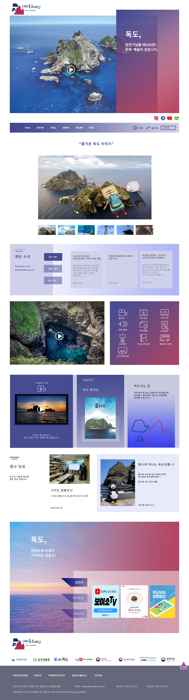
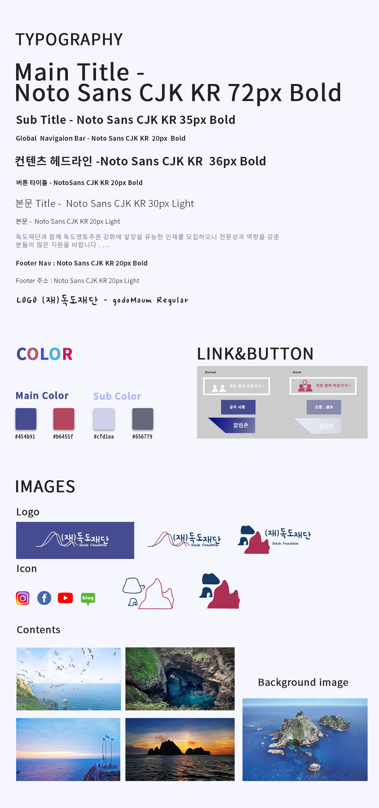

-
#UX기획
사용자 리서치를 통한 Insight를 도출
Problem을 해결하는 다양한 Soluction -
#프로그래밍 구현
HTML/CSS 시멘틱 웹코딩뿐만 아니라
Javascript와 jQuery로 다이나믹 웹로직 구현 -
#UI 디자인
사용자 경험을 고려한 컬러, 폰트, 레이아웃을
선정해 원하는 UX를 이끌어내는 감각있는 디자이너
로딩중
Jang Shin Young
Creative Publisher
원칙은 세우되 그것이 나만의 고집이 되지 않도록 . . .
최고보다 최선을 목표로. . .
최선을 다하되 그것이 즐거운 일이 되도록,
언제나 나의 일에 열정과 사랑을 담으며 살아가는, 저는!
웹 퍼블리셔 "신영"입니다
스크롤바를 내리면 작품을 감상할 수 있습니다.
ABOUT ME
혼연일체(渾然一體 ): 생각, 행동, 의지 따위가 완전히 하나가 됨.
여러 가지 상황과 핑계로 간혹, 우리는 혼연일체가 되어 살아가기 힘든 경우가 있습니다.
이런 순간이 오면 저는 오랜 직장 생활에서 터득한,스스로 동기를 부여하며,계획한 일을 달성 하려고 노력합니다
목표를 달성하기 위해 계획을 세우고 스스로 동기를 부여하며 이루고자 하는 꿈을 향해 달려가는,
안녕하세요! 저는! 웹 퍼블리셔 “신영”입니다
사용가능한 프로그램
- by
- logo
UX분석능력과Emmet/Zencoding 활용
-
UX/UI 디자인
사용자의 Context와 Needs를 파악하고
Problem을 해결할 수 있는 Insight 도출 -
반응형 웹표준
시멘틱을 지향하는 HTML/CSS 작성능력 보유,
자바스크립트와 제이쿼리 기반의 로직 구현 가능
SASS를 이용한 스타일링, React Library 활용
-
Sass Preprocessor
협업 웹코딩의 필수 기술인 SCSS를 이용한
CSS 스타일링을 원활이 사용할 수 있습니다. -
React Library
국내 프론트엔드 시장의 대세 리액트 코드구현,
자바스크립트와 제이쿼리 기반의 로직구현 가능
나의 특별한 능력
젠코딩
HTML5
CSS
jQuery
웹기획
디자인
95%
리더쉽
적극성
창조성
사교성
책임감
정직성
온라인 이력서

웹디자인을 공부하며 UX 디자인을 알게 되었습니다.
간단한 원리지만,
사용자의 경험을 통해 나온 UX 디자인이 어떠한
편리함을 주는지 인지하지 못할 때도 많은데요!
저는 이런 편리함에 익숙해 있는
사용자에게 한 단계 더 업그레이드 된 UX 디자인을 하는 디자이너가 되고 싶습니다.

WORK STYLE
- UX디자인을 중심으로 UI를 만들며,
- 감각적인 웹 디자인을 HTML5 시멘틱코딩과
- CSS3,JS로 웹 페이지를 구현
친구들이 말하는 나는
-
은경
도전하는 것을 즐기는소심한 마음을 숨기고 언제나 새로운 일에 도전하며 살아가는 언니! 무슨일이든 1등으로 잘 해내리라 믿습니다!
-
인주
끝장 볼때까지 하는 스타일꾸준히 노력하며 목표한 바는 끝장 볼때까지 하는 성격 새로운 일을 하고 있지만 이또한 멋지게 달성할거야~! 우리 누나를 응원합니다!
-
소영
노력파 내 친구 장신영!잘하기 위해 계속 고민하며 시간과 에너지를 쏟아 이루고자 하는 그 무엇도 해내는 강인한 내 친구를 추천합니다!
PORTFOLIO
1. 독도재단 (리뉴얼 디자인)
독도재단 Renewal Design
기존 웹사이트의 개선사항을 찾아 메인페이지를 리뉴얼 디자인하였습니다.
독도를 모티브로 로고를 새롭게 디자인하고 메인컬러를 유지하여 기존
사용자들에게 친숙함을 유도하였습니다. 아름다운 독도의 모습으로 홈페이지의 호감도를 상승하는데 포인트를 주었습니다.
작업프로그램 : Photoshop, IllustratorCC,Visual Studio Code
100% 개인 작업


쇼핑몰 FLOR (리뉴얼 디자인)
FLOR Renewal Design
기존 웹사이트의 개선사항을 찾아 메인페이지를 리뉴얼 디자인하였습니다.
코스메틱 브랜드의 감각적인 웹 페이지를 만들기 위해 메인컬러를 새롭게 선정하여 통일감을 주었습니다.
브랜드의 이미지를 담은 로고와 사용자에게 웹 호감도를 상승시키기 위해 포인트 주었습니다.
작업프로그램 : Photoshop,IllustratorCC,Visual Studio Code
100% 개인 작업


계절별 추천여행지 사이트 디자인
SEASON TRAVEL Site Design
사계절을 카테고리로 분류하여 계절별 여행지를 소개하는 원페이지
형식의 사이트를 제작하였습니다. 생각하며 여행하기의 뜻을 담아
"혜다"라는 순 우리말 로고를 만들었으며,여행지의 정보를 담았습니다
작업프로그램 : Photoshop, Illustrator, Visual Studio Code
100% 개인 작업


센스있는 동작을 javascript/jquery로직으로 구현
HTML5&CSS3 시멘틱 페이지를 SCSS,ZenCoding(EMMET)으로 작성할 수 있습니다
UX 디자인을 기반으로 UI를 만들어 편리한 웹 사이트를 기획하는 것이 목표입니다
포토샵 일러스트 XD를 활용하여 감각적인 웹 디자인을 구현합니다
JS 플러그인을 사용에 그치지 않고 필요한 기능을 직접 구현할 수 있는 Javascript/jQuery 로직구현이 가능합니다.
새로운 코딩기법과 디자인을 배우는 것이 정말 즐겁습니다.
for문과 다중 if문의 결합한 로직 구현
SASS, Emmet 활용
페이지 전체의 계층구조를 입체적으로 분석할 수 있는
실무형 코딩기법 Emmet을 사용할 수 있어 업무시간을 단축시킬 수 있을뿐 아니라,
유지보수도 더욱 쉽고 정확하게 처리할 수 있습니다.
SCSS의 가장 큰 장점인 변수와 Mixin 기능을 적극 활용하여
CSS 스타일링을 할 수 있습니다.
Sprite-Image와 IR(Image Replacement)기법에 능숙
id, class를 남발하지 않고 원하는 요소를 셀렉팅할 수 있는 능력,
CSS3 Transform, Transition, Keyframes을 이용한 애니메이션 효과 구현
직접 구현한 Slide
UX DESIGN
작품리스트
이전 다음내가 생각하는 사용자경험 - User Experience
" 편리함을 가장한 Problem "
비대면 시대에 가장 유용한 키오스크는 초보사용자도 쉽게 이용 하도록 최대한 간소한 사용법이 장점이다
그러나, 편리함을 가장한 불편함과 당황함을 격어본 경험이있다
키오스크가 있는 가게에 입점했을 때 기계가 보이지 않아 카운터로 주문하러 갔다가 '키오스크 주문해주세요' 라던지...
혹은 메뉴 고민과 결제까지 가는 동안 줄 서 있는 뒷사람의 눈치를 본 경험
믿는 도끼에 발등을 찍힌다면 더 아픈 법
쉬울거라 생각했는데 혹은 남들은 쉽다는데 나는 어려워~!
눈치를 보게 한다면 UX디자인이 맞을까?
이런 사용자의 경험에서 나온 심리적인 문제점까지 생각할 수 있는 디자인이 제가 하고싶은 UX디자인입니다.
키오스크를 이용하는 사례

디자인과 UX의 차이
- 1.거꾸로 우산
-
우산에 물이 묻어 불편했던 부분을
뒤집어 접는 방식의 UX디자인 사례
- 2.라이트 달린 슬러퍼
-
어두운 밤 발밑이 안보여 넘어진 경험 있으시죠?
실내 슬리퍼 앞코에 라이트를 단 UX디자인 사례
5Whys - 하수구에 담배꽁초를 버리는 이유
Why-1
하수구에 버리면 보이지 않을거란 생각
Why-2
이미 많은 담배꽁초가 버려져 있기 때문에
Why-3
주변에 휴지통이 없기 때문에
Why-4
비흡연 구역이라는 인식 부족
Why-5
하수구에 쓰레기를 버리면 어떤 피해가 생기는지 인식 부족
솔루션
장마철 하수구 막힘 사고가 가져오는 환경 피해와 재해에 대한 교육과 인식 강화가 필요함
UI DESIGN
{kind=link}
{kind=link}
{kind=link}
{kind=link}
{kind=link}
{kind=link}
{kind=link}
{kind=link}
마음을 읽는 디자이너이고 싶습니다.
디자인을 시작하기에는 많은 나이가 아닌지 공부하는 동안 고민이 많았습니다 그러나 웹디자인을 배우며
다른 일을 해본 경험또한 디자인에 많은 도움이 될거란 것을 알게 되었습니다.
웹 페이지를 작업하며 또 다른 사용자가 되어 아이디어를 추가하고 만들어내는 기쁨이 자신감이 되었습니다.
결과가 바로 보여지고 시작과 끝이 있는 혹은 끝나지 않는 작업의 매력에 날을 새기 일쑤였습니다.
에러를 찾기 위해 홀로 고민하는 시간의 투자가 많을수록 해결했을 때 기쁨이 배가 되었습니다.
끊임없이 생각하는 웹 디자이너가 되고자 합니다
수업시간 작품


PROJECT
독도재단 리뉴얼

스타일가이드
